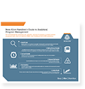
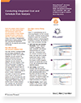
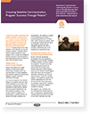
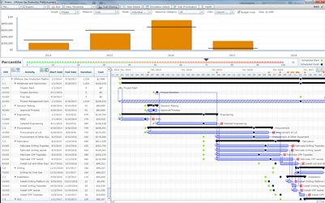
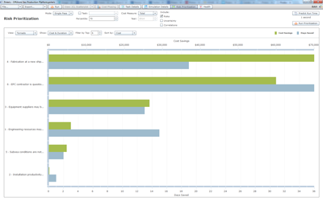
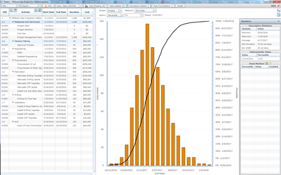

<!--===============================================================
Content
=========================================================== -->
<div id="PageContainerWide">
<div id="ColumnsContainer"><a name="JumpContent"></a>

<div id="contentBody">

<META HTTP-EQUIV="Content-type" CONTENT="text/html; charset=UTF-8">
<link rel="stylesheet" href="css/polaris-styles.css" type="text/css" media="all"/><!--[if IE 9]>
<style>
	#contactus select {
		background-image: none;
	}
</style><![endif]--><!--[if lte IE 8]>
<link rel="stylesheet" href="css/ie8.css" type="text/css" media="all"/><![endif]-->
<script src="//ajax.googleapis.com/ajax/libs/jquery/1.8/jquery.min.js"></script>
<script type="text/javascript" src="scripts/jquery.transit.min.js"></script>
<script type="text/javascript" src="scripts/image-flow.js"></script>
<script type="text/javascript" src="scripts/animatescroll.js"></script>
<script type="text/javascript" src="scripts/jquery.simplemodal.1.4.4.min.js"></script>
<script type="text/javascript" src="scripts/polaris.js"></script>

<div class="section" id="banner">
	<div class="bannerContent" id="left">
		<div class="logo"></div>
		<h2>Real-Time Project Analysis Software</h2>
		<p class="bannerP">Booz Allen’s Polaris integrates cost, schedule, and risk artifacts into a single model enabling better project performance through real-time simulations.</p>
		<div id="bannerButtons">
			<a href="#contactus" id="orContactUs">Contact Us</a> <a href="#" id="download">Download Free Trial</a>
		</div>
		
	</div>
	<div class="bannerContent" id="right"></div>
</div>
<div class="section" id="playVideo">
	<div class="videoButtonBackground"></div>
	<a class="videoButton">
		<div><br/> // Play Video</div>
	</a>
	<div class="video">
		<div>
			<!-- Start of Brightcove Player -->

			<div style="display:none">

			</div>

			<!--
			By use of this code snippet, I agree to the Brightcove Publisher T and C
			found at https://accounts.brightcove.com/en/terms-and-conditions/.
			-->

			<script language="JavaScript" type="text/javascript" src="http://admin.brightcove.com/js/BrightcoveExperiences.js"></script>

			<object id="myExperience3578338303001" class="BrightcoveExperience">
				<param name="bgcolor" value="#FFFFFF"/>
				<param name="width" value="773"/>
				<param name="height" value="435"/>
				<param name="playerID" value="887381406001"/>
				<param name="playerKey" value="AQ~~,AAAAuO08_qE~,vMgV1G46Z81ZCmCqkqvL6rBdyl6gfTpD"/>
				<param name="isVid" value="true"/>
				<param name="isUI" value="true"/>
				<param name="dynamicStreaming" value="true"/>
				<param name="autoStart" value="true"/>

				<param name="@videoPlayer" value="3578338303001"/>
			</object>

			<!--
			This script tag will cause the Brightcove Players defined above it to be created as soon
			as the line is read by the browser. If you wish to have the player instantiated only after
			the rest of the HTML is processed and the page load is complete, remove the line.
			-->
			<script type="text/javascript">brightcove.createExperiences();</script>

			<!-- End of Brightcove Player -->
		</div>
	</div>
</div>
<div class="section" id="usage">
	<h2>Guiding Enhanced Project Performance</h2>
	<p>Polaris delivers projects, programs and portfolios both on time and on budget. Need help? Whether it’s training or consulting, Booz Allen’s bench of Polaris analysts are available to assist. Polaris analysis consists of four phases:</p>
	<div class="usageItems">
		<div class="bubble">
			<div class="bubbleimg" id="integrate"></div>
			<p>Integrate</p>
		</div>
		<div class="bubble">
			<div class="bubbleimg" id="predict"></div>
			<p>Predict</p>
		</div>
		<div class="bubble">
			<div class="bubbleimg" id="analyze"></div>
			<p>Analyze</p>
		</div>
		<div class="bubble">
			<div class="bubbleimg" id="mitigate"></div>
			<p>Mitigate</p>
		</div>
	</div>
</div>
<div class="lines">///////////////////////////////////////////////////</div>
<div class="brandStripe"></div>
<div class="section" id="arrow"></div>
<div class="section integrate" id="description">
	<div class="description-navigation">
		<a title="Previous" class="previous"></a> <a title="Next" class="next"></a>
	</div>
	<div class="descriptionContainer" id="integrateText">
		<h2>Integrate</h2>
		<p>Polaris integrates cost estimates, schedules and risk registers into a single analytical model that provides a cohesive view across all three project control functions.</p>
		<div class="descriptionLeft">
			<h3>Understand Your Project Controls</h3>
			<p>Projects can be exceedingly complex; they are comprised of many different functions including budgeting, estimating, scheduling, and risk management. Polaris takes all of these pieces and integrates them into a single picture finding inconsistencies, risks, and drivers of cost and schedule growth, allowing your projects to be more efficient and streamlined.</p>
		</div>
		<div class="descriptionMiddle">
			<h3>Working with What's in Place</h3>
			<p>Shifting Project Controls Platforms is time consuming and expensive. Rather than requiring the creation of new artifacts, Polaris leverages existing project management data. Polaris is fully compatible with industry tools including Oracle<sup>®</sup> Primavera P6, Microsoft<sup>®</sup> Project and Microsoft<sup>®</sup> Excel, allowing the team to continue using their existing infrastructure, streamlining all project data into one manageable space.
			</p>
		</div>
		<div class="descriptionRight">
			<h3>Many Functions. One Team.</h3>
			<p>Nothing is more critical to a project than the team. Cost Estimators, Schedulers, Risk Managers, and Project Managers all play integral roles in the completion of the project; each team member uses their skills to deliver the best possible results. Unfortunately, with so many moving parts, communicating to all team members can be tough. Through Polaris’ seamless merging of artifacts, teams can use one file, enabling real-time analysis, seeing the immediate effects each function area has upon the others.</p>
		</div>
	</div>
	<div class="descriptionContainer" id="predictText" style="display: none;">
		<h2>Predict</h2>
		<p>Polaris forecasts future cost and schedule growth allowing project managers to identify challenge areas, set reserve levels based on quantitative analysis, and to make commitments with confidence.</p>
		<div class="descriptionLeft twoColumn">
			<h3>Nothing Left to the Imagination</h3>
			<p>When driving down a dark road, it’s always a good idea to turn on the headlights. The same is true when managing a project. No one can predict the future, but with Polaris project managers now have the ability to see the entire range of possible outcomes both before and during project execution. Polaris is built on Booz Allen’s RealTime Analytics technology<sup>TM</sup> empowering thousands of Monte Carlo Simulations to run in mere seconds. These thousands of simulations provide a guiding light for managers to see variations of potential cost and schedule outcomes.
			</p>
		</div>
		<div class="descriptionRight twoColumn">
			<h3>Guessing vs. Knowing</h3>
			<p>Take out the guessing game when making decisions. Don’t settle for qualitative information when Polaris uses quantitative data to predict potential outcomes. Polaris simulates a myriad of potential sources of risk and uncertainty thousands of times, accurately forecasting future cost and schedule growth. By comparing forecasts against the planned schedule and available budget, managers can better arm themselves against risks before they arise and pose a threat.</p>
		</div>
	</div>
	<div class="descriptionContainer" id="analyzeText" style="display: none;">
		<h2>Analyze</h2>
		<p>While Polaris was specifically built for integrated cost and schedule risk analysis it can also be used just for schedule risk analysis. Our cutting edge sensitivity analysis engine enables managers to discover and troubleshoot the root causes of cost and schedule growth.</p>
		<div class="descriptionLeft twoColumn">
			<h3>Integrated Cost and Schedule Risk Analysis (ICSRA)</h3>
			<p>The fundamental idea of ICSRA is that costs, schedules, and risks are uncertain events describable as probability distributions. By determining the combined effects of those distributions we can predict future cost and schedule growth and analyze its sources.</p>
		</div>
		<div class="descriptionRight twoColumn">
			<h3>Schedule Risk Analysis (SRA)</h3>
			<p>For projects just starting to use quantitative analysis, Polaris can quickly perform SRA without incorporating budgets. Equipped with a variety of views, Polaris gives analysts the ability to scale their analysis for their organization’s maturity and their project’s needs.</p>
		</div>
		<div class="descriptionLeft twoColumn">
			<h3>Down to the Lowest Level</h3>
			<p>Polaris, using RealTime Analytics technology<sup>TM</sup>, stores the outcomes of every single input (uncertainty and risk) and every single output (cost, schedule, and resources) for the entire model, for all iterations of the simulation run. This allows analysts to perform unparalleled root cause analysis to uncover sources of cost and schedule growth at all levels of the project.
			</p>
		</div>
		<div class="descriptionRight twoColumn">
			<h3>Complex Analysis Made Accessible</h3>
			<p>Analysis is only as valuable as it is understandable. This is why Polaris’ analyses are presented using evocative visuals, built into an easy-to-use interface allowing decision makers to quickly understand the results while fostering communication across the project controls disciplines.</p>
		</div>
	</div>
	<div class="descriptionContainer" id="mitigateText" style="display: none;">
		<h2>Mitigate</h2>
		<p>Polaris’ RealTime Analytics simulation engine is one of a kind. For the first time, managers and analysts can test mitigative actions and run what-if analyses without ever leaving the meeting.</p>
		<div class="descriptionLeft oneColumn">
			<h3>The Right Decisions at the Right Time</h3>
			<p>Analysis is only valuable if it enables better decision making. The most revolutionary feature of Polaris is giving all users, from analysts to decision makers, the ability to test mitigative actions and to see their impact on reducing cost and schedule growth. With RealTime Analytics technology, it is not only possible to take action but also to see the impacts of those decisions immediately, while still in the meeting. Hour long simulation run times are a thing of the past. With Polaris, it is possible to streamline team communications, analyze challenges, simulate every risk that lies ahead and discover the best possible project path.</p>
		</div>
	</div>
</div>

<div class="section" id="featureusage" style="display:none">
	<h2>Guiding Enhanced Project Performance</h2>
	<p>Polaris delivers projects, programs and portfolios both on time and on budget. Need help? Whether it’s training or consulting, Booz Allen’s bench of Polaris analysts are available to assist. Polaris analysis consists of four phases:</p>
	<div class="featureusageItems">
		<div class="featurebubble">
			<div class="featurebubbleimg" id="integrate"></div>
			<p>Features</p>
		</div>
		<div class="featurebubble">
			<div class="featurebubbleimg" id="predict"></div>
			<p>Specs</p>
		</div>
		<div class="featurebubble">
			<div class="featurebubbleimg" id="analyze"></div>
			<p>Fourth Item</p>
		</div>
		<div class="featurebubble">
			<div class="featurebubbleimg" id="mitigate"></div>
			<p>Fifth Item</p>
		</div>
	</div></div>
<div class="featuresection" id="featurearrow"></div>
<div class="featuresection integrate" id="featuredescription">
	<div class="featuredescription-navigation">
		<a title="Previous" class="previous"></a> <a title="Next" class="next"></a>
	</div>
	<div class="featuredescriptionContainer featuredList" >
			<h2>Features</h2>
			<ul>
				<li>Gantt Chart and Cost/Schedule Uncertainty</li>
				<li>Cost Loading and Fiscal Year Planning</li>
				<li>Discrete Risk Analysis</li>
				<li>Sensitivity Analysis</li>
				<li>Statusing and Advanced Reporting</li>
				<li>Advanced Cost/Schedule Tradeoff Analysis</li>
				<li>Critical Path Tree Visualization</li>
				<li>Resource Heat Map Visualization</li>
				<li>Inflation Tables</li>
				<li>Schedule Health Check</li>
				<li>Cost/Schedule Tradeoffs</li>
				<li>Joint Confidence Level (JCL) Scatterplot</li>
				<li>Automated Risk Priotitization</li>
				<li>RealTime Analytics Simulation Technology</li>
			</ul>
			<div class="twoColumn left">
				<p class="sysRequirements">
					<b>Software Compatibility:</b><br/> Microsoft® Project 2003, 2007, 2010<br/> Primavera P6 (v7, 8)<br/> Microsoft® Excel 2003, 2007, 2010, 2013 (.xls, .xlsx)<br/>
				</p>
			</div>
			<div class="twoColumn">
				<p class="sysRequirements">
					<b>System Requirements:</b><br/> Microsoft® Windows XP Service Pack 3 or higher, Windows® Vista, Windows® 7, Windows® 8<br/> Flash Player 10.2 or later<br/> Minimum 1GB RAM<br/> Hard Drive 		Space: 160MB
				</p>
			</div>
	</div>
	<div class="featuredescriptionContainer" id="predictText" style="display: none;">
		<h2>Predict</h2>
		<p>Polaris forecasts future cost and schedule growth allowing project managers to identify challenge areas, set reserve levels based on quantitative analysis, and to make commitments with confidence.</p>
		<div class="descriptionLeft twoColumn">
			<h3>Nothing Left to the Imagination</h3>
			<p>When driving down a dark road, it’s always a good idea to turn on the headlights. The same is true when managing a project. No one can predict the future, but with Polaris project managers now have the ability to see the entire range of possible outcomes both before and during project execution. Polaris is built on Booz Allen’s RealTime Analytics technology<sup>TM</sup> empowering thousands of Monte Carlo Simulations to run in mere seconds. These thousands of simulations provide a guiding light for managers to see variations of potential cost and schedule outcomes.
			</p>
		</div>
		<div class="descriptionRight twoColumn">
			<h3>Guessing vs. Knowing</h3>
			<p>Take out the guessing game when making decisions. Don’t settle for qualitative information when Polaris uses quantitative data to predict potential outcomes. Polaris simulates a myriad of potential sources of risk and uncertainty thousands of times, accurately forecasting future cost and schedule growth. By comparing forecasts against the planned schedule and available budget, managers can better arm themselves against risks before they arise and pose a threat.</p>
		</div>
	</div>
	<div class="featuredescriptionContainer" id="analyzeText" style="display: none;">
		<h2>Analyze</h2>
		<p>While Polaris was specifically built for integrated cost and schedule risk analysis it can also be used just for schedule risk analysis. Our cutting edge sensitivity analysis engine enables managers to discover and troubleshoot the root causes of cost and schedule growth.</p>
		<div class="descriptionLeft twoColumn">
			<h3>Integrated Cost and Schedule Risk Analysis (ICSRA)</h3>
			<p>The fundamental idea of ICSRA is that costs, schedules, and risks are uncertain events describable as probability distributions. By determining the combined effects of those distributions we can predict future cost and schedule growth and analyze its sources.</p>
		</div>
		<div class="descriptionRight twoColumn">
			<h3>Schedule Risk Analysis (SRA)</h3>
			<p>For projects just starting to use quantitative analysis, Polaris can quickly perform SRA without incorporating budgets. Equipped with a variety of views, Polaris gives analysts the ability to scale their analysis for their organization’s maturity and their project’s needs.</p>
		</div>
		<div class="descriptionLeft twoColumn">
			<h3>Down to the Lowest Level</h3>
			<p>Polaris, using RealTime Analytics technology<sup>TM</sup>, stores the outcomes of every single input (uncertainty and risk) and every single output (cost, schedule, and resources) for the entire model, for all iterations of the simulation run. This allows analysts to perform unparalleled root cause analysis to uncover sources of cost and schedule growth at all levels of the project.
			</p>
		</div>
		<div class="descriptionRight twoColumn">
			<h3>Complex Analysis Made Accessible</h3>
			<p>Analysis is only as valuable as it is understandable. This is why Polaris’ analyses are presented using evocative visuals, built into an easy-to-use interface allowing decision makers to quickly understand the results while fostering communication across the project controls disciplines.</p>
		</div>
	</div>
	<div class="featuredescriptionContainer" id="mitigateText" style="display: none;">
		<h2>Mitigate</h2>
		<p>Polaris’ RealTime Analytics simulation engine is one of a kind. For the first time, managers and analysts can test mitigative actions and run what-if analyses without ever leaving the meeting.</p>
		<div class="descriptionLeft oneColumn">
			<h3>The Right Decisions at the Right Time</h3>
			<p>Analysis is only valuable if it enables better decision making. The most revolutionary feature of Polaris is giving all users, from analysts to decision makers, the ability to test mitigative actions and to see their impact on reducing cost and schedule growth. With RealTime Analytics technology, it is not only possible to take action but also to see the impacts of those decisions immediately, while still in the meeting. Hour long simulation run times are a thing of the past. With Polaris, it is possible to streamline team communications, analyze challenges, simulate every risk that lies ahead and discover the best possible project path.</p>
		</div>
	</div></div>


<div class="section" id="resources">
	<div class="flow-navigation" data-for="">
		<a title="Previous" class="previous"></a> <a title="Next" class="next"></a>
	</div>
	<h2>Resources</h2>
	<p>Learn more about how Booz Allen and our clients use Polaris to solve their project, program, and portfolio management challenges.</p>
	<div id="resourceList" class="resourceList" style="width: 1240px">
		<a class="item" target="_blank" href="/content/dam/boozallen/documents/Polaris-Product-Slick.pdf">
			<div class="thumbnail"></div>
			<div class="title">FACT SHEET</div>
			<div class="caption">Polaris Product Sheet</div>
		</a> <a class="item" target="_blank" href="/content/dam/boozallen/documents/Polaris-Consult-and-Train-Slick.pdf">
		<div class="thumbnail"></div>
		<div class="title">FACT SHEET</div>
		<div class="caption">Consulting and Training Services</div>
	</a> <a class="item" target="_blank" href="/content/dam/boozallen/documents/The-Next-Gen-Program-Analysis-Infographic.pdf">
		<div class="thumbnail"></div>
		<div class="title">INFOGRAPHIC</div>
		<div class="caption">The Next Generation of Program Analysis</div>
	</a> <a class="item" target="_blank" href="/content/dam/boozallen/documents/Analytical-Program-Management-Infographic.pdf">
		<div class="thumbnail"></div>
		<div class="title">INFOGRAPHIC</div>
		<div class="caption">Booz Allen Hamilton's Guide to Analytical Program Management</div>
	</a> <a class="item" target="_blank" href="/content/dam/boozallen/documents/Ensuring-Satellite-Communication-Program-Success-Through-Polaris.pdf">
		<div class="thumbnail"></div>
		<div class="title">CASE STUDY</div>
		<div class="caption">Ensuring Satellite Communication Program Success Through Polaris</div>
	</a>
		<a class="item" target="_blank" href="/content/dam/boozallen/documents/Using-Analytical-Tools-to-Manage-Todays-Complex-Space-Programs.pdf">
			<div class="thumbnail"></div>
			<div class="title">CASE STUDY</div>
			<div class="caption">Using Analytical Tools to Manage Today's Complex Space Programs</div>
		</a> <a class="item" target="_blank" href="/content/dam/boozallen/documents/Analytical-Program-Management-White-Paper.pdf">
		<div class="thumbnail"></div>
		<div class="title">WHITE PAPER</div>
		<div class="caption">Analytical Program Management</div>
	</a>
	</div>
</div>
<div class="section" id="preview">
	<div class="flow-navigation" data-for="#flowPreview">
		<a title="Previous" class="previous"></a> <a title="Next" class="next"></a>
	</div>
	<h2>Preview</h2>
	<p>Polaris is equipped with a variety of analytical views and visualizations.</p>
	<div id="flowPreview" class="image-flow" style="height: 300px">
		<div class="flow-item">
			
			<div class="flow-title">Gantt Chart</div>
			<div class="flow-caption"></div>
		</div>
		<div class="flow-item">
			
			<div class="flow-title">Cost Phasing test test test test test test test</div>
			<div class="flow-caption"></div>
		</div>
		<div class="flow-item">
			
			<div class="flow-title">Risk Prioritization</div>
			<div class="flow-caption"></div>
		</div>
		<div class="flow-item">
			
			<div class="flow-title">Sensitivity Analysis</div>
			<div class="flow-caption"></div>
		</div>
		<div class="flow-item">
			
			<div class="flow-title">Scatter Plot</div>
			<div class="flow-caption"></div>
		</div>
		<div class="flow-item">
			
			<div class="flow-title">Tasks &quot;CDF/PDF&quot;</div>
			<div class="flow-caption"></div>
		</div>
		<div class="flow-item">
			
			<div class="flow-title">Critical Treepath</div>
			<div class="flow-caption"></div>
		</div>
		<div class="flow-item">
			
			<div class="flow-title">Resource Utilization Heat Map</div>
			<div class="flow-caption"></div>
		</div>
		<div class="flow-item">
			
			<div class="flow-title">Health Check</div>
			<div class="flow-caption"></div>
		</div>
	</div>
</div>
<div class="section" id="contactus">
<h2>Contact Us</h2>
<p>Thank you for your interest in Polaris, your inquiry is important to us. If you would like to learn more about Polaris or schedule a demo, please fill out the form below. We look forward to speaking with you soon!</p>


<form action="https://www.salesforce.com/servlet/servlet.WebToLead?" method="POST">

<input type=hidden name="oid" value="00DF0000000655f">
<input type=hidden name="retURL" value="http://boozallen-cp-aws01.siteworx.com:4502/content/boozallen/en_US/consulting/products/software/polaris/polaris-contact/thank-you.html?form=submitted">

<div class="formColumn">
	<p><label for="first_name">First Name</label><input  id="first_name" maxlength="40" name="first_name" size="20" type="text" required /><br></p>

	<p><label for="last_name">Last Name</label><input  id="last_name" maxlength="80" name="last_name" size="20" type="text" required /><br></p>

	<p><label for="title">Title</label><input id="title" maxlength="128" name="title" size="20" type="text" /><br></p>

	<p><label for="email">Email</label><input  id="email" maxlength="80" name="email" size="20" type="text" required /><br></p>

	<p><label for="phone">Phone</label><input  id="phone" maxlength="80" name="phone" size="20" type="text" /><br></p>
</div>
<div class="formColumn">
<p><label for="company">Company/Organization</label><input  id="company" maxlength="40" name="company" size="20" type="text" /><br></p>

<p><label for="city">City</label><input  id="city" maxlength="40" name="city" size="20" type="text" /><br></p>

<p><label for="country_code">Country</label><span class="selectWrap"><span class="selectText"></span><select  id="country_code" name="country_code"><option value="">--None--</option><option value="US">United States</option>
<option value="AF">Afghanistan</option>
<option value="AX">Aland Islands</option>
<option value="AL">Albania</option>
<option value="DZ">Algeria</option>
<option value="AD">Andorra</option>
<option value="AO">Angola</option>
<option value="AI">Anguilla</option>
<option value="AQ">Antarctica</option>
<option value="AG">Antigua and Barbuda</option>
<option value="AR">Argentina</option>
<option value="AM">Armenia</option>
<option value="AW">Aruba</option>
<option value="AU">Australia</option>
<option value="AT">Austria</option>
<option value="AZ">Azerbaijan</option>
<option value="BS">Bahamas</option>
<option value="BH">Bahrain</option>
<option value="BD">Bangladesh</option>
<option value="BB">Barbados</option>
<option value="BY">Belarus</option>
<option value="BE">Belgium</option>
<option value="BZ">Belize</option>
<option value="BJ">Benin</option>
<option value="BM">Bermuda</option>
<option value="BT">Bhutan</option>
<option value="BO">Bolivia, Plurinational State of</option>
<option value="BQ">Bonaire, Sint Eustatius and Saba</option>
<option value="BA">Bosnia and Herzegovina</option>
<option value="BW">Botswana</option>
<option value="BV">Bouvet Island</option>
<option value="BR">Brazil</option>
<option value="IO">British Indian Ocean Territory</option>
<option value="BN">Brunei Darussalam</option>
<option value="BG">Bulgaria</option>
<option value="BF">Burkina Faso</option>
<option value="BI">Burundi</option>
<option value="KH">Cambodia</option>
<option value="CM">Cameroon</option>
<option value="CA">Canada</option>
<option value="CV">Cape Verde</option>
<option value="KY">Cayman Islands</option>
<option value="CF">Central African Republic</option>
<option value="TD">Chad</option>
<option value="CL">Chile</option>
<option value="CN">China</option>
<option value="TW">Chinese Taipei</option>
<option value="CX">Christmas Island</option>
<option value="CC">Cocos (Keeling) Islands</option>
<option value="CO">Colombia</option>
<option value="KM">Comoros</option>
<option value="CG">Congo</option>
<option value="CD">Congo, the Democratic Republic of the</option>
<option value="CK">Cook Islands</option>
<option value="CR">Costa Rica</option>
<option value="CI">Cote d&#39;Ivoire</option>
<option value="HR">Croatia</option>
<option value="CU">Cuba</option>
<option value="CW">CuraÁao</option>
<option value="CY">Cyprus</option>
<option value="CZ">Czech Republic</option>
<option value="DK">Denmark</option>
<option value="DJ">Djibouti</option>
<option value="DM">Dominica</option>
<option value="DO">Dominican Republic</option>
<option value="EC">Ecuador</option>
<option value="EG">Egypt</option>
<option value="SV">El Salvador</option>
<option value="GQ">Equatorial Guinea</option>
<option value="ER">Eritrea</option>
<option value="EE">Estonia</option>
<option value="ET">Ethiopia</option>
<option value="FK">Falkland Islands (Malvinas)</option>
<option value="FO">Faroe Islands</option>
<option value="FJ">Fiji</option>
<option value="FI">Finland</option>
<option value="FR">France</option>
<option value="GF">French Guiana</option>
<option value="PF">French Polynesia</option>
<option value="TF">French Southern Territories</option>
<option value="GA">Gabon</option>
<option value="GM">Gambia</option>
<option value="GE">Georgia</option>
<option value="DE">Germany</option>
<option value="GH">Ghana</option>
<option value="GI">Gibraltar</option>
<option value="GR">Greece</option>
<option value="GL">Greenland</option>
<option value="GD">Grenada</option>
<option value="GP">Guadeloupe</option>
<option value="GT">Guatemala</option>
<option value="GG">Guernsey</option>
<option value="GN">Guinea</option>
<option value="GW">Guinea-Bissau</option>
<option value="GY">Guyana</option>
<option value="HT">Haiti</option>
<option value="HM">Heard Island and McDonald Islands</option>
<option value="VA">Holy See (Vatican City State)</option>
<option value="HN">Honduras</option>
<option value="HU">Hungary</option>
<option value="IS">Iceland</option>
<option value="IN">India</option>
<option value="ID">Indonesia</option>
<option value="IR">Iran, Islamic Republic of</option>
<option value="IQ">Iraq</option>
<option value="IE">Ireland</option>
<option value="IM">Isle of Man</option>
<option value="IL">Israel</option>
<option value="IT">Italy</option>
<option value="JM">Jamaica</option>
<option value="JP">Japan</option>
<option value="JE">Jersey</option>
<option value="JO">Jordan</option>
<option value="KZ">Kazakhstan</option>
<option value="KE">Kenya</option>
<option value="KI">Kiribati</option>
<option value="KP">Korea, Democratic People&#39;s Republic of</option>
<option value="KR">Korea, Republic of</option>
<option value="KW">Kuwait</option>
<option value="KG">Kyrgyzstan</option>
<option value="LA">Lao People&#39;s Democratic Republic</option>
<option value="LV">Latvia</option>
<option value="LB">Lebanon</option>
<option value="LS">Lesotho</option>
<option value="LR">Liberia</option>
<option value="LY">Libyan Arab Jamahiriya</option>
<option value="LI">Liechtenstein</option>
<option value="LT">Lithuania</option>
<option value="LU">Luxembourg</option>
<option value="MO">Macao</option>
<option value="MK">Macedonia, the former Yugoslav Republic of</option>
<option value="MG">Madagascar</option>
<option value="MW">Malawi</option>
<option value="MY">Malaysia</option>
<option value="MV">Maldives</option>
<option value="ML">Mali</option>
<option value="MT">Malta</option>
<option value="MQ">Martinique</option>
<option value="MR">Mauritania</option>
<option value="MU">Mauritius</option>
<option value="YT">Mayotte</option>
<option value="MX">Mexico</option>
<option value="MD">Moldova, Republic of</option>
<option value="MC">Monaco</option>
<option value="MN">Mongolia</option>
<option value="ME">Montenegro</option>
<option value="MS">Montserrat</option>
<option value="MA">Morocco</option>
<option value="MZ">Mozambique</option>
<option value="MM">Myanmar</option>
<option value="NA">Namibia</option>
<option value="NR">Nauru</option>
<option value="NP">Nepal</option>
<option value="NL">Netherlands</option>
<option value="NC">New Caledonia</option>
<option value="NZ">New Zealand</option>
<option value="NI">Nicaragua</option>
<option value="NE">Niger</option>
<option value="NG">Nigeria</option>
<option value="NU">Niue</option>
<option value="NF">Norfolk Island</option>
<option value="NO">Norway</option>
<option value="OM">Oman</option>
<option value="PK">Pakistan</option>
<option value="PS">Palestinian Territory, Occupied</option>
<option value="PA">Panama</option>
<option value="PG">Papua New Guinea</option>
<option value="PY">Paraguay</option>
<option value="PE">Peru</option>
<option value="PH">Philippines</option>
<option value="PN">Pitcairn</option>
<option value="PL">Poland</option>
<option value="PT">Portugal</option>
<option value="QA">Qatar</option>
<option value="RE">Reunion</option>
<option value="RO">Romania</option>
<option value="RU">Russian Federation</option>
<option value="RW">Rwanda</option>
<option value="BL">Saint BarthÈlemy</option>
<option value="SH">Saint Helena, Ascension and Tristan da Cunha</option>
<option value="KN">Saint Kitts and Nevis</option>
<option value="LC">Saint Lucia</option>
<option value="MF">Saint Martin (French part)</option>
<option value="PM">Saint Pierre and Miquelon</option>
<option value="VC">Saint Vincent and the Grenadines</option>
<option value="WS">Samoa</option>
<option value="SM">San Marino</option>
<option value="ST">Sao Tome and Principe</option>
<option value="SA">Saudi Arabia</option>
<option value="SN">Senegal</option>
<option value="RS">Serbia</option>
<option value="SC">Seychelles</option>
<option value="SL">Sierra Leone</option>
<option value="SG">Singapore</option>
<option value="SX">Sint Maarten (Dutch part)</option>
<option value="SK">Slovakia</option>
<option value="SI">Slovenia</option>
<option value="SB">Solomon Islands</option>
<option value="SO">Somalia</option>
<option value="ZA">South Africa</option>
<option value="GS">South Georgia and the South Sandwich Islands</option>
<option value="SS">South Sudan</option>
<option value="ES">Spain</option>
<option value="LK">Sri Lanka</option>
<option value="SD">Sudan</option>
<option value="SR">Suriname</option>
<option value="SJ">Svalbard and Jan Mayen</option>
<option value="SZ">Swaziland</option>
<option value="SE">Sweden</option>
<option value="CH">Switzerland</option>
<option value="SY">Syrian Arab Republic</option>
<option value="TJ">Tajikistan</option>
<option value="TZ">Tanzania, United Republic of</option>
<option value="TH">Thailand</option>
<option value="TL">Timor-Leste</option>
<option value="TG">Togo</option>
<option value="TK">Tokelau</option>
<option value="TO">Tonga</option>
<option value="TT">Trinidad and Tobago</option>
<option value="TN">Tunisia</option>
<option value="TR">Turkey</option>
<option value="TM">Turkmenistan</option>
<option value="TC">Turks and Caicos Islands</option>
<option value="TV">Tuvalu</option>
<option value="UG">Uganda</option>
<option value="UA">Ukraine</option>
<option value="AE">United Arab Emirates</option>
<option value="GB">United Kingdom</option>
<option value="UY">Uruguay</option>
<option value="UZ">Uzbekistan</option>
<option value="VU">Vanuatu</option>
<option value="VE">Venezuela, Bolivarian Republic of</option>
<option value="VN">Viet Nam</option>
<option value="VG">Virgin Islands, British</option>
<option value="WF">Wallis and Futuna</option>
<option value="EH">Western Sahara</option>
<option value="YE">Yemen</option>
<option value="ZM">Zambia</option>
<option value="ZW">Zimbabwe</option>
</select></span><br></p>

<p><label for="state_code">State</label><span class="selectWrap"><span class="selectText"></span><select  id="state_code" name="state_code"><option value="">N/A</option>
	<option value="AL">Alabama</option>
	<option value="AK">Alaska</option>
	<option value="AZ">Arizona</option>
	<option value="AR">Arkansas</option>
	<option value="CA">California</option>
	<option value="CO">Colorado</option>
	<option value="CT">Connecticut</option>
	<option value="DE">Delaware</option>
	<option value="DC">District of Columbia</option>
	<option value="FL">Florida</option>
	<option value="GA">Georgia</option>
	<option value="HI">Hawaii</option>
	<option value="ID">Idaho</option>
	<option value="IL">Illinois</option>
	<option value="IN">Indiana</option>
	<option value="IA">Iowa</option>
	<option value="KS">Kansas</option>
	<option value="KY">Kentucky</option>
	<option value="LA">Louisiana</option>
	<option value="ME">Maine</option>
	<option value="MD">Maryland</option>
	<option value="MA">Massachusetts</option>
	<option value="MI">Michigan</option>
	<option value="MN">Minnesota</option>
	<option value="MS">Mississippi</option>
	<option value="MO">Missouri</option>
	<option value="MT">Montana</option>
	<option value="NE">Nebraska</option>
	<option value="NV">Nevada</option>
	<option value="NH">New Hampshire</option>
	<option value="NJ">New Jersey</option>
	<option value="NM">New Mexico</option>
	<option value="NY">New York</option>
	<option value="NC">North Carolina</option>
	<option value="ND">North Dakota</option>
	<option value="OH">Ohio</option>
	<option value="OK">Oklahoma</option>
	<option value="OR">Oregon</option>
	<option value="PA">Pennsylvania</option>
	<option value="RI">Rhode Island</option>
	<option value="SC">South Carolina</option>
	<option value="SD">South Dakota</option>
	<option value="TN">Tennessee</option>
	<option value="TX">Texas</option>
	<option value="UT">Utah</option>
	<option value="VT">Vermont</option>
	<option value="VA">Virginia</option>
	<option value="WA">Washington</option>
	<option value="WV">West Virginia</option>
	<option value="WI">Wisconsin</option>
	<option value="WY">Wyoming</option>
</select></span><br></p>
<p class="submit">
	<br />
	<input type="hidden" name="lead_source" value="BoozAllen.com Contact Form"><input type="submit" name="submit" value="Submit">
</p>
</div>
</form>

</div>

</div>

